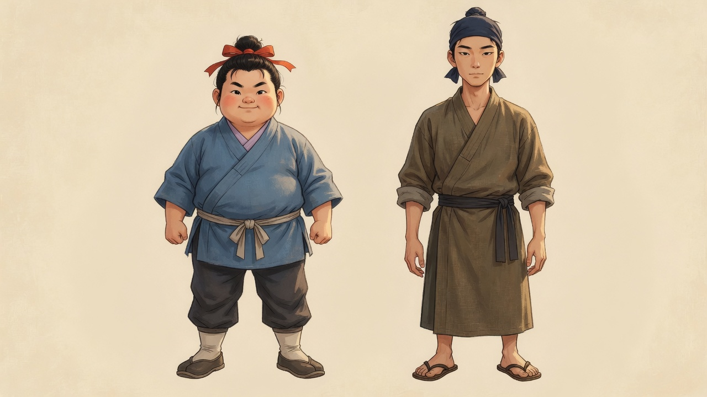
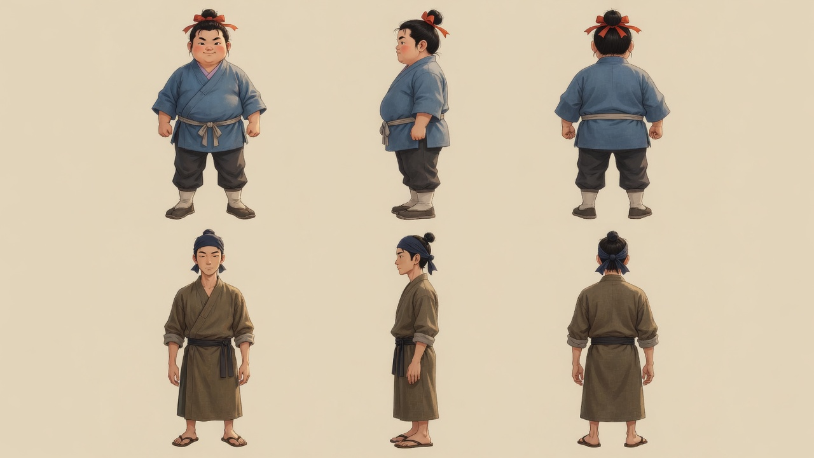

主角與熟手 · 造型候選
性別與姓名未新定。地圖名牌仍用現有顯示名「林遠」。體態是兩種既有外形，不隨腳力升級改變，也不改數值。左：圓、藍袍、朱紅髮帶、容易累但仍有精神。右：瘦直、橄欖褐袍、深色包頭、步態較穩。

正面、右側、背面

地圖高度與放大
現有烘焙幀 190×214、scale 2，腳底錨點 (90, 184)。地圖上約 95×107 場景像素。下面把側身圖縮到 107px 高，旁邊是 3 倍。
主角 107px
熟手 107px
107px
主角 ×3
熟手 ×3